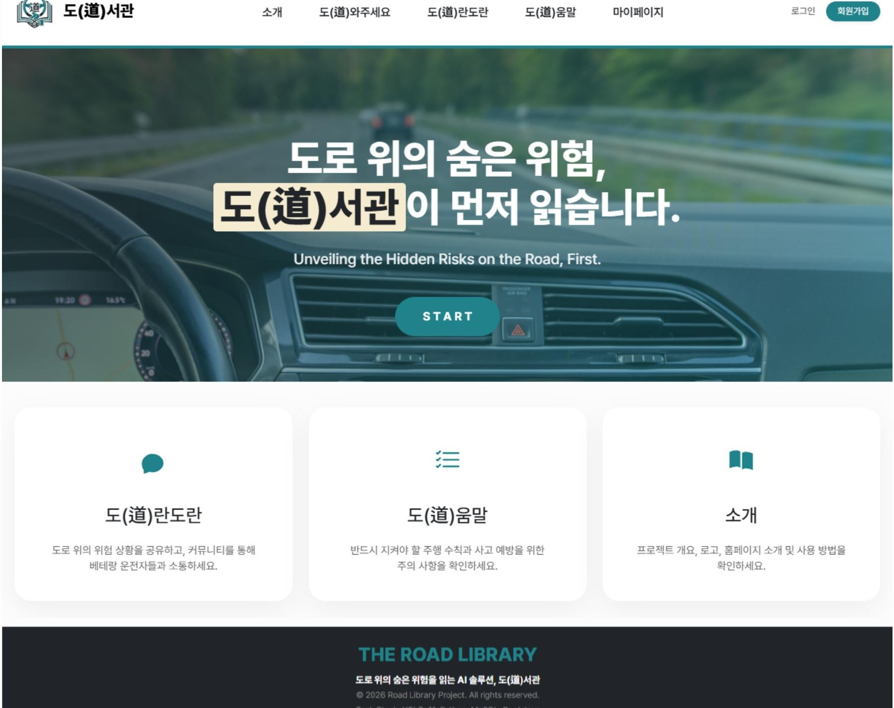

MINI PROJECT · TEAM (5인)
도(道)서관 — The Road Library

산간 지형이 많은 고속도로에서 반복되는 로드킬과 그로 인한 대형 화물차 사고 위험을 줄이기 위한 Vision AI 서비스입니다. YOLOv11로 도로 위 야생동물(멧돼지·너구리·고라니)을 실시간으로 탐지해 운전자에게 위험을 미리 알리고, 커뮤니티 게시판으로 운전자들끼리 위험 정보를 공유할 수 있도록 설계했습니다.
COMMUNITY FEATURES
게시판(도란도란)에서 사용자가 콘텐츠를 생성하고 상호작용할 수 있도록, 주요 커뮤니티 기능을 프론트엔드부터 백엔드(Flask)까지 직접 구현했습니다.
BACKEND
- Flask 라우트·뷰 로직으로 댓글·대댓글·공감·스크랩·신고 CRUD API 구현
- 게시글-댓글 연관 구조에 맞춘 DB 쿼리 작성 및 데이터 연동
- 조회수·좋아요 기준 인기글 자동 등록, 공지 고정 로직 구현
→ 게시판 핵심 상호작용 기능을 프론트-백엔드 전 구간 구현해 사용자 간 위험 정보 공유 흐름을 완성했습니다.
그 외 공통 레이아웃 및 메인 페이지 구축, AI 데이터셋 수집·라벨링 및 모델 학습 최적화에도 참여했습니다.
- HTML/CSS/JS
- Bootstrap
- Flask
- YOLOv11
- PyTorch
- TiDB(MySQL)
- Cloudinary